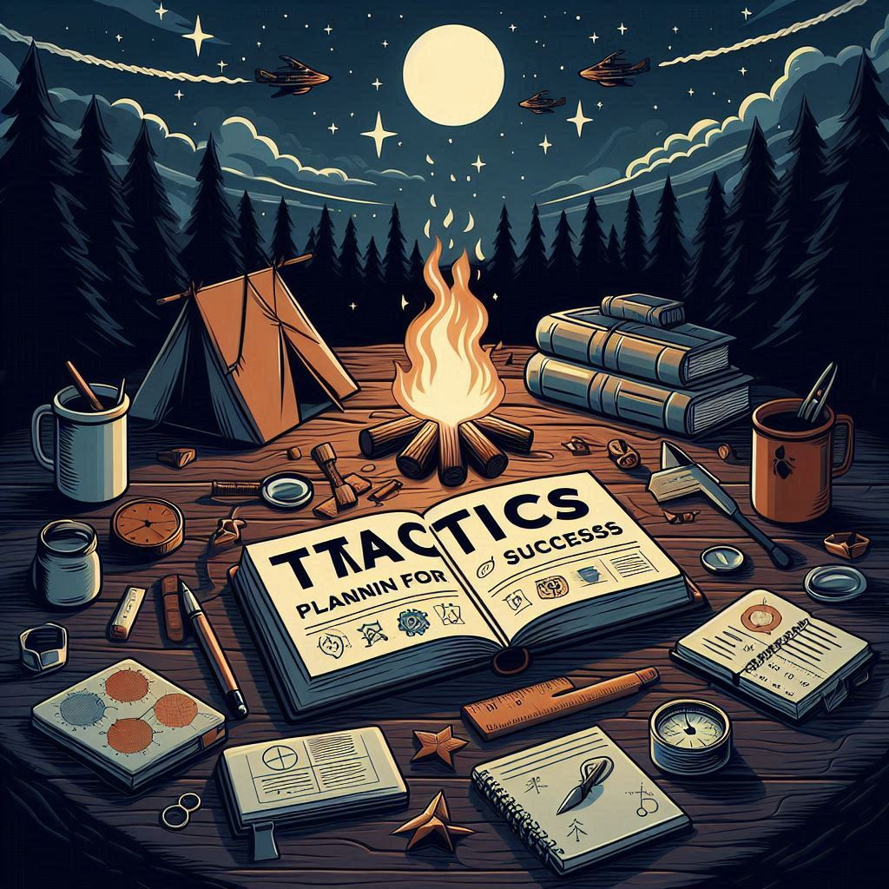
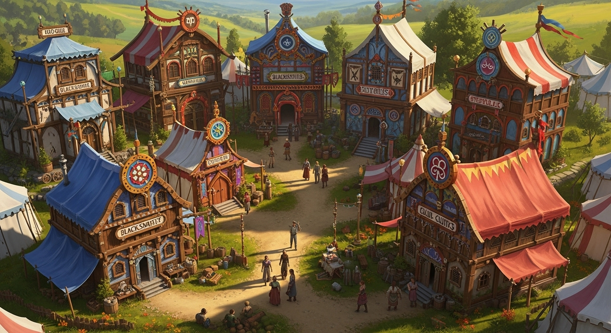

Workshop
Welcome to The Workshop, the dynamic hub for practical application, skill-building, and collaborative innovation within our Network. This is where ideas transform into action, where individuals share tools, knowledge, and hands-on experiences to empower themselves and actively build the infrastructure of a truly free society.
Pages
Agorist Tactics: Strategies for Economic Freedom
Gain actionable strategies and practical methods for engaging in counter-economics. Equip yourself with the tools for building true economic independence outside of coercive systems.
Transcending Location: Living Free, Anywhere

Explore the philosophy and practical steps to achieve freedom and self-sufficiency, no matter your physical location. Embrace adaptability and resourcefulness as key components of a truly mobile, free life.
Guilds
Explore our system of skill-based, voluntary associations designed to empower individuals and enhance collective capabilities. Guilds facilitate collaboration, mentorship, and specialized services across the network.
Freedom Guard

Learn the principles and practices of self-defense, mutual aid, and community protection within a voluntaryist framework. Discover how individuals and groups ensure safety without relying on coercive authorities.
Network Hosts

Understand the vital role of individuals and groups providing temporary safe havens, resources, and connections for traveling network members. Network Hosts are crucial nodes in our decentralized support system.
Anarchist Innovation Station

Step into a hub for creative problem-solving, technological development, and designing new tools for a free society. Foster continuous improvement and invention within this dynamic environment.
Nomadic Markets & Caravans

Uncover the strategic benefits of mobile marketplaces and traveling communities that expand freedom and build resilient networks. See how these dynamic structures foster vibrant trade and deep connection across diverse areas.
Caravanarchy

Explore our unique nomadic agorist community model, detailing its mission, daily life, and the opportunities it offers. This is your direct invitation to discover and potentially participate in our traveling collective.